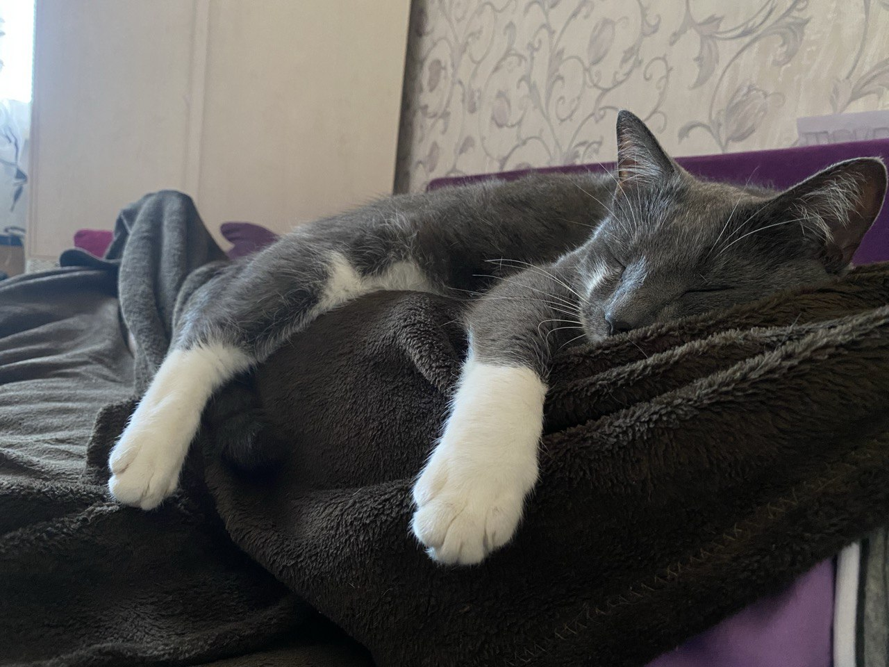
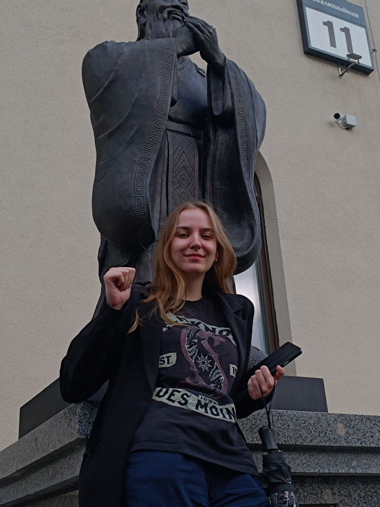

О себе
Привет! Меня зовут Лиза, и мне 19 лет. Я учусь на третьем курсе специальности "Управление информационными ресурсами" в Академии управления. Мой путь сюда был довольно необычным: изначально я мечтала стать архитектором, но жизнь повернула так, что я оказалась в этой увлекательной сфере.
Я живу в городе Минске, в районе, который недавно для себя открыла как один из самых маргинальных. Это было для меня настоящим открытием и немного удивило, но каждый день здесь дарит мне новые впечатления и уроки.
Моя семья – это мои родители и мой кот Феникс. Его имя мы выбрали не случайно – пепельный окрас кота напомнил нам мифическую птицу, возрождающуюся из пепла, так что Феникс – символично и красиво. Однако все называют его просто Феней.
У меня есть замечательные друзья, с которыми мы делимся радостью и поддерживаем друг друга в любых ситуациях. В свободное время я погружаюсь в свои любимые хобби, которые делают мою жизнь интересной и насыщенной.


Жизнь полна сюрпризов, и я с интересом жду, что она преподнесет мне дальше.
Хобби
Чтение
Я обожаю читать. Нет конкретного жанра, который я предпочитаю, так как люблю погружаться как в классическую литературу, так и в современные произведения, например, мангу. Каждая книга открывает для меня новый мир и дарит незабываемые впечатления.
Кулинария
Готовка — одно из моих больших увлечений. Особенно мне нравится готовить азиатские пельмени гедза. Правда, я не очень люблю выпечку из-за большого количества посуды, которую приходится мыть. Но если кто-то поможет с уборкой, я готова экспериментировать и с десертами.

Путешествия
Я посетила множество городов в Беларуси и за её пределами. Была во всех областных центрах, и каждый из них оставил особые впечатления. Путешествия расширяют мои горизонты и дарят массу новых знаний и эмоций.


Спорт
Периодически занимаюсь спортом и бегаю. В ближайшее время планирую купить абонемент в бассейн, чтобы разнообразить свою физическую активность и поддерживать форму.
Искусство
Искусство занимает особое место в моей жизни. Я часто посещаю выставки и театральные постановки. В будущем очень хочу посетить концерт живой музыки. Ранее я увлекалась рисованием, но давно не брала карандаш в руки, из-за чего мои навыки подрастерялись. Также умею играть на укулеле, хотя раньше играла на гитаре, но после лопнувшей струны и отращивания ногтей бросила это занятие.
Чай
Чай — это мое особое увлечение. Я перепробовала уже огромное количество разных сортов чая и разбираюсь в культуре традиционного китайского чаепития пинча. Постепенно обзавожусь различными принадлежностями для заваривания чая и планирую купить чайную доску чабань.

Китайский язык и культура
Уже почти год хожу на курсы китайского языка в РИКК БГУ, где изучаю его на уровне HSK2. В ближайшем будущем хочу сдать тест на уровень владения языком и попробовать себя в китайской каллиграфии.
